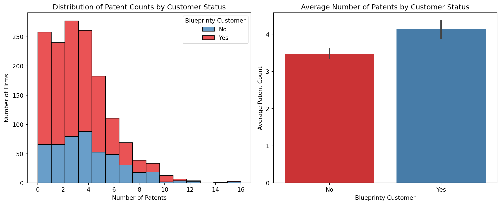
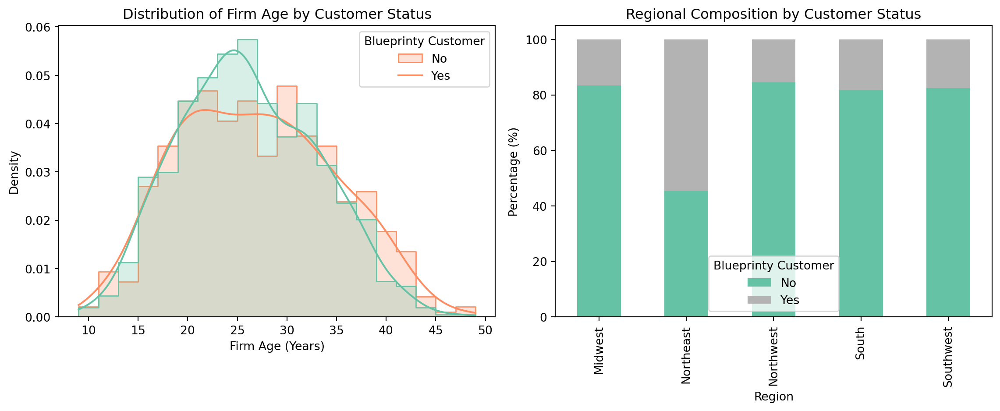
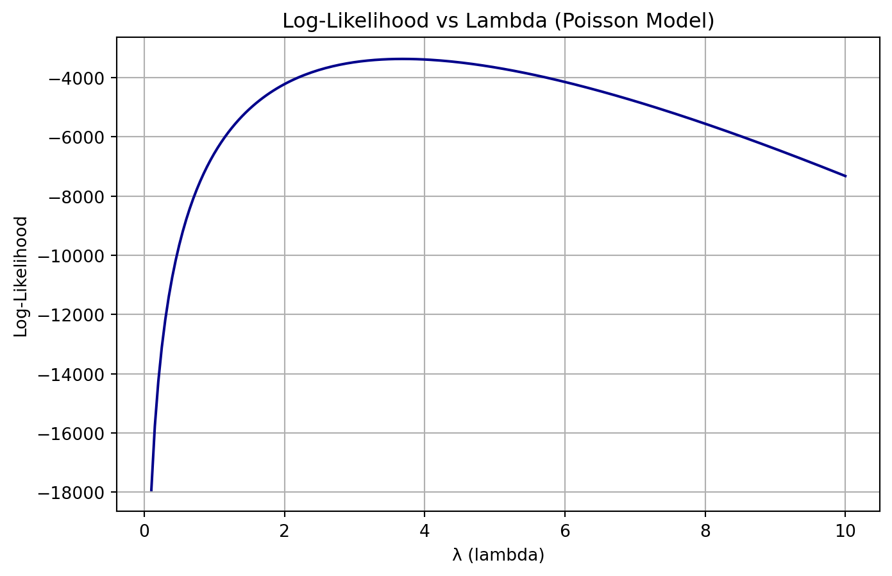
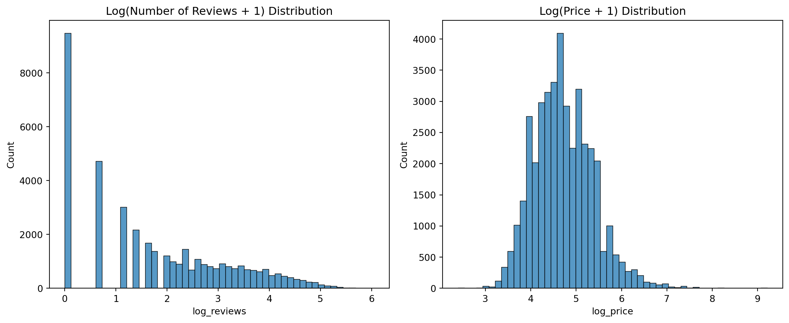
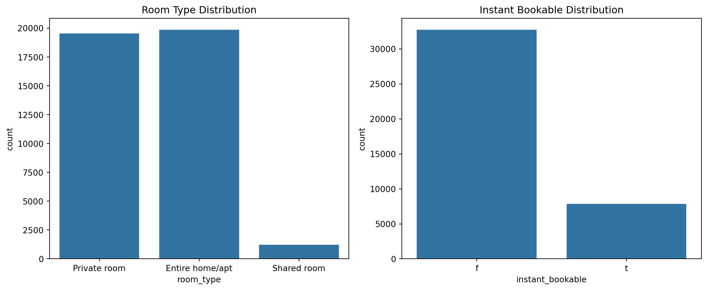
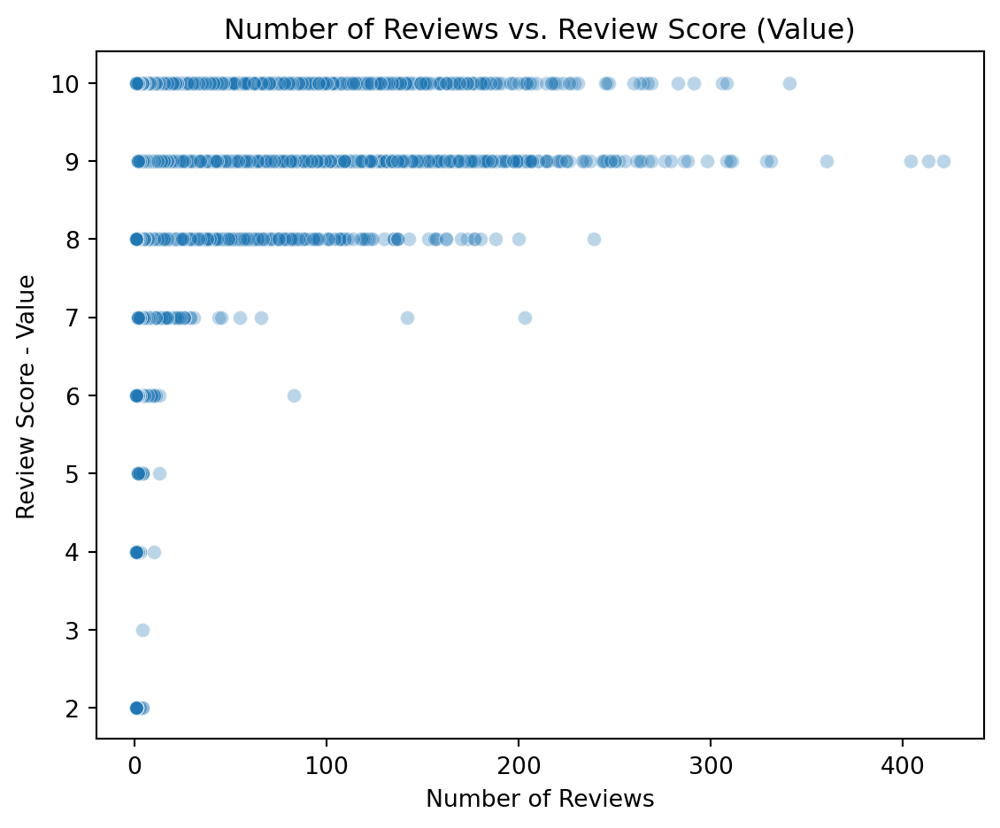

Reading blueprinty’s data
import pandas as pd
blueprinty = pd.read_csv('blueprinty.csv')
blueprinty.head(5)| patents | region | age | iscustomer | |
|---|---|---|---|---|
| 0 | 0 | Midwest | 32.5 | 0 |
| 1 | 3 | Southwest | 37.5 | 0 |
| 2 | 4 | Northwest | 27.0 | 1 |
| 3 | 3 | Northeast | 24.5 | 0 |
| 4 | 3 | Southwest | 37.0 | 0 |
Lulu Ling
May 5, 2025
Blueprinty is a small firm that makes software for developing blueprints specifically for submitting patent applications to the US patent office. Their marketing team would like to make the claim that patent applicants using Blueprinty’s software are more successful in getting their patent applications approved. Ideal data to study such an effect might include the success rate of patent applications before using Blueprinty’s software and after using it. Unfortunately, such data is not available.
However, Blueprinty has collected data on 1,500 mature (non-startup) engineering firms. The data include each firm’s number of patents awarded over the last 5 years, regional location, age since incorporation, and whether or not the firm uses Blueprinty’s software. The marketing team would like to use this data to make the claim that firms using Blueprinty’s software are more successful in getting their patent applications approved.
| patents | region | age | iscustomer | |
|---|---|---|---|---|
| 0 | 0 | Midwest | 32.5 | 0 |
| 1 | 3 | Southwest | 37.5 | 0 |
| 2 | 4 | Northwest | 27.0 | 1 |
| 3 | 3 | Northeast | 24.5 | 0 |
| 4 | 3 | Southwest | 37.0 | 0 |
This section conducts preliminary observations through EDA, with the aim of comparing the differences in patent output between companies using Blueprinty software and non-users. As can be seen from the chart, the proportion of Blueprinty users in the high patent number range is relatively high, and the overall patent performance is also more outstanding. Comparison of the average number of patents further shows that Blueprinty customers perform significantly better than non-customers. These preliminary results suggest that Blueprinty software may have a positive impact on patent applications, providing reasonable motivation and direction for the subsequent establishment of more rigorous statistical models.
import matplotlib.pyplot as plt
import seaborn as sns
import numpy as np
plt.figure(figsize=(12, 5))
plt.subplot(1, 2, 1)
sns.histplot(data=blueprinty, x="patents", hue='iscustomer', kde=False, bins=15, palette="Set1", multiple="stack")
plt.title("Distribution of Patent Counts by Customer Status")
plt.xlabel("Number of Patents")
plt.ylabel("Number of Firms")
plt.legend(title="Blueprinty Customer", labels=["No", "Yes"])
plt.subplot(1, 2, 2)
sns.barplot(data=blueprinty, x="iscustomer", y="patents", hue="iscustomer", palette="Set1", estimator=np.mean, dodge=False, legend=False)
plt.title("Average Number of Patents by Customer Status")
plt.xlabel("Blueprinty Customer")
plt.ylabel("Average Patent Count")
plt.xticks([0, 1], ["No", "Yes"])
plt.tight_layout()
plt.show()
Blueprinty customers are not selected at random. It may be important to account for systematic differences in the age and regional location of customers vs non-customers.
Next, we will continue to use ED to further confirm whether there are systematic differences in firm characteristics between Blueprinty customers and non-customers, which is crucial for the subsequent establishment of causal inference models (such as regression models).
plt.figure(figsize=(12, 5))
plt.subplot(1, 2, 1)
sns.histplot(data=blueprinty, x="age", hue="iscustomer", kde=True, bins=20, palette="Set2", element="step", stat="density", common_norm=False)
plt.title("Distribution of Firm Age by Customer Status")
plt.xlabel("Firm Age (Years)")
plt.ylabel("Density")
plt.legend(title="Blueprinty Customer", labels=["No", "Yes"])
plt.subplot(1, 2, 2)
region_counts = pd.crosstab(blueprinty["region"], blueprinty["iscustomer"], normalize="index") * 100
region_counts.plot(kind="bar", stacked=True, ax=plt.gca(), colormap="Set2")
plt.title("Regional Composition by Customer Status")
plt.xlabel("Region")
plt.ylabel("Percentage (%)")
plt.legend(title="Blueprinty Customer", labels=["No", "Yes"])
plt.tight_layout()
plt.show()
This further illustrates that the company age may affect whether to become a user and may also be associated with the number of patents, so this variable should be controlled when making causal inferences.
Since our outcome variable of interest can only be small integer values per a set unit of time, we can use a Poisson density to model the number of patents awarded to each engineering firm over the last 5 years. We start by estimating a simple Poisson model via Maximum Likelihood.
\(\displaystyle L(\lambda) = \prod_{i=1}^n \frac{e^{-\lambda} \lambda^{Y_i}}{Y_i!} = e^{-n\lambda} \cdot \lambda^{\sum Y_i} \cdot \frac{1}{\prod Y_i!}\)
Using the previously defined log-likelihood function, we can visualize the change in log-likelihood for different values of λ (lambda) and find the maximum likelihood estimate (MLE) through a graph.
import numpy as np
import pandas as pd
import matplotlib.pyplot as plt
from scipy.special import factorial
Y = blueprinty["patents"].values
n = len(Y)
def poisson_loglikelihood(lmbda, Y):
if lmbda <= 0:
return -np.inf
return -n * lmbda + np.sum(Y * np.log(lmbda)) - np.sum(np.log(factorial(Y)))
lambda_range = np.linspace(0.1, 10, 200)
loglikelihood_values = [poisson_loglikelihood(lmbda, Y) for lmbda in lambda_range]
plt.figure(figsize=(8, 5))
plt.plot(lambda_range, loglikelihood_values, color='darkblue')
plt.title("Log-Likelihood vs Lambda (Poisson Model)")
plt.xlabel("λ (lambda)")
plt.ylabel("Log-Likelihood")
plt.grid(True)
plt.show()
import sympy as sp
from IPython.display import display, Math
lmbda, n, sum_y = sp.symbols('lambda n sum_y', positive=True)
log_likelihood = -n * lmbda + sum_y * sp.log(lmbda)
d_log_likelihood = sp.diff(log_likelihood, lmbda)
solution = sp.solve(d_log_likelihood, lmbda)[0]
display(Math(r"\textbf{Step 1: Define the log-likelihood function}"))
display(Math(r"\log L(\lambda) = -n\lambda + \left(\sum Y_i\right)\log \lambda"))
display(Math(r"\textbf{Step 2: Take the first derivative}"))
display(Math(r"\frac{d}{d\lambda} \log L(\lambda) = -n + \frac{\sum Y_i}{\lambda}"))
display(Math(r"\textbf{Step 3: Set the derivative equal to zero and solve for } \lambda"))
display(Math(r"0 = -n + \frac{\sum Y_i}{\lambda} \Rightarrow \hat{\lambda}_{\text{MLE}} = \frac{\sum Y_i}{n} = \bar{Y}"))
display(Math(r"\boxed{\hat{\lambda}_{\text{MLE}} = " + sp.latex(solution) + r"}"))\(\displaystyle \textbf{Step 1: Define the log-likelihood function}\)
\(\displaystyle \log L(\lambda) = -n\lambda + \left(\sum Y_i\right)\log \lambda\)
\(\displaystyle \textbf{Step 2: Take the first derivative}\)
\(\displaystyle \frac{d}{d\lambda} \log L(\lambda) = -n + \frac{\sum Y_i}{\lambda}\)
\(\displaystyle \textbf{Step 3: Set the derivative equal to zero and solve for } \lambda\)
\(\displaystyle 0 = -n + \frac{\sum Y_i}{\lambda} \Rightarrow \hat{\lambda}_{\text{MLE}} = \frac{\sum Y_i}{n} = \bar{Y}\)
\(\displaystyle \boxed{\hat{\lambda}_{\text{MLE}} = \frac{sum_{y}}{n}}\)
Use numerical optimization methods to find the maximum likelihood estimate (MLE) of λ in the Poisson model.
from scipy.optimize import minimize
# Define the negative log-likelihood function
def neg_log_likelihood(lmbda):
return -np.sum(Y * np.log(lmbda) - lmbda - np.log(factorial(Y)))
# Use minimize to find the MLE
result = minimize(neg_log_likelihood, x0=[1.0], bounds=[(1e-6, None)])
lambda_mle = result.x[0]
mle_df = pd.DataFrame({
"Parameter": ["lambda"],
"MLE Estimate": [lambda_mle]
})
mle_df| Parameter | MLE Estimate | |
|---|---|---|
| 0 | lambda | 3.684666 |
Next, we extend our simple Poisson model to a Poisson Regression Model such that \(Y_i = \text{Poisson}(\lambda_i)\) where \(\lambda_i = \exp(X_i'\beta)\). The interpretation is that the success rate of patent awards is not constant across all firms (\(\lambda\)) but rather is a function of firm characteristics \(X_i\). Specifically, we will use the covariates age, age squared, region, and whether the firm is a customer of Blueprinty.
The original Poisson model likelihood function is expanded into a log-likelihood function of a Poisson regression model, where λ is no longer a fixed parameter but is determined by the explanatory variable X and the parameter vector
import numpy as np
from IPython.display import display, Math
likelihood = r"L(\lambda) = \prod_{i=1}^n \frac{e^{-\lambda} \lambda^{Y_i}}{Y_i!}"
lambda_def = r"\lambda_i = \exp(X_i^\top \beta)"
log_likelihood = r"\log L(\beta) = \sum_{i=1}^n \left[Y_i \log(\lambda_i) - \lambda_i - \log(Y_i!)\right]"
log_likelihood_expanded = r"\log L(\beta) = \sum_{i=1}^n \left[Y_i X_i^\top \beta - \exp(X_i^\top \beta) - \log(Y_i!)\right]"
display(Math(likelihood))
display(Math(lambda_def))
display(Math(log_likelihood))
display(Math(log_likelihood_expanded))\(\displaystyle L(\lambda) = \prod_{i=1}^n \frac{e^{-\lambda} \lambda^{Y_i}}{Y_i!}\)
\(\displaystyle \lambda_i = \exp(X_i^\top \beta)\)
\(\displaystyle \log L(\beta) = \sum_{i=1}^n \left[Y_i \log(\lambda_i) - \lambda_i - \log(Y_i!)\right]\)
\(\displaystyle \log L(\beta) = \sum_{i=1}^n \left[Y_i X_i^\top \beta - \exp(X_i^\top \beta) - \log(Y_i!)\right]\)
Perform maximum likelihood estimation (MLE) on the Poisson regression model and use the inverse matrix of the Hessian matrix to calculate the standard errors of the parameters (Standard Errors)
blueprinty["age_std"] = (blueprinty["age"] - blueprinty["age"].mean()) / blueprinty["age"].std()
blueprinty["age_squared_std"] = blueprinty["age_std"] ** 2
region_dummies = pd.get_dummies(blueprinty["region"], drop_first=True)
X = pd.concat([
pd.Series(1, index=blueprinty.index, name="intercept"),
blueprinty[["age", "age_squared_std", "iscustomer"]],
region_dummies
], axis=1)
X_mat = X.astype(float).values
Y = blueprinty["patents"].values
n, k = X_mat.shape
def poisson_regression_loglikelihood(beta, Y, X):
lin_pred = X @ beta
lambda_i = np.exp(lin_pred)
return np.sum(Y * np.log(lambda_i) - lambda_i - np.log(factorial(Y)))
def neg_log_likelihood(beta):
return -poisson_regression_loglikelihood(beta, Y, X_mat)
beta_init = np.zeros(k)
result = minimize(neg_log_likelihood, x0=beta_init, method='BFGS')
beta_hat = result.x
hessian_inv = result.hess_inv
se_beta = np.sqrt(np.diag(hessian_inv))
mle_table = pd.DataFrame({
"Variable": X.columns,
"Estimate": beta_hat,
"Std. Error": se_beta
})
mle_table| Variable | Estimate | Std. Error | |
|---|---|---|---|
| 0 | intercept | 1.554750 | 0.063189 |
| 1 | age | -0.007970 | 0.001890 |
| 2 | age_squared_std | -0.155814 | 0.013481 |
| 3 | iscustomer | 0.207591 | 0.031102 |
| 4 | Northeast | 0.029170 | 0.031939 |
| 5 | Northwest | -0.017575 | 0.052020 |
| 6 | South | 0.056561 | 0.051001 |
| 7 | Southwest | 0.050576 | 0.043582 |
We use a Poisson regression model (GLM with Poisson family) to quantify and test whether the Blueprinty software usage status (iscustomer) significantly affects the number of patents obtained by the company, while also controlling for other variables that may affect patent performance, such as company age and region.
import statsmodels.api as sm
blueprinty["age_std"] = (blueprinty["age"] - blueprinty["age"].mean()) / blueprinty["age"].std()
blueprinty["age_squared_std"] = blueprinty["age_std"] ** 2
region_dummies = pd.get_dummies(blueprinty["region"], drop_first=True)
X_sm = pd.concat([
blueprinty[["age", "age_squared_std", "iscustomer"]],
region_dummies
], axis=1)
X_sm = X_sm.astype(float)
X_sm = sm.add_constant(X_sm)
Y = blueprinty["patents"]
model = sm.GLM(Y, X_sm, family=sm.families.Poisson())
result = model.fit()
summary_df = result.summary2().tables[1].reset_index()
summary_df = summary_df.rename(columns={
"index": "Variable",
"Coef.": "coef",
"Std.Err.": "std err",
"P>|z|": "P>|z|",
"[0.025": "[0.025",
"0.975]": "0.975]"
})
summary_df| Variable | coef | std err | z | P>|z| | [0.025 | 0.975] | |
|---|---|---|---|---|---|---|---|
| 0 | const | 1.554747 | 0.066336 | 23.437483 | 1.773673e-121 | 1.424731 | 1.684763 |
| 1 | age | -0.007970 | 0.002074 | -3.843138 | 1.214711e-04 | -0.012035 | -0.003905 |
| 2 | age_squared_std | -0.155814 | 0.013533 | -11.513237 | 1.131496e-30 | -0.182339 | -0.129289 |
| 3 | iscustomer | 0.207591 | 0.030895 | 6.719179 | 1.827509e-11 | 0.147037 | 0.268144 |
| 4 | Northeast | 0.029170 | 0.043625 | 0.668647 | 5.037205e-01 | -0.056334 | 0.114674 |
| 5 | Northwest | -0.017575 | 0.053781 | -0.326782 | 7.438327e-01 | -0.122983 | 0.087833 |
| 6 | South | 0.056561 | 0.052662 | 1.074036 | 2.828066e-01 | -0.046655 | 0.159778 |
| 7 | Southwest | 0.050576 | 0.047198 | 1.071568 | 2.839141e-01 | -0.041931 | 0.143083 |
We use a Poisson regression model to analyze the relationship between Blueprinty software usage and the firm’s patent application success. The model controls for firm age (and its square) and regional differences, and uses the number of patents as an explanatory variable to perform maximum likelihood estimation (MLE).
The results show:
blueprinty["iscustomer"] = blueprinty["iscustomer"].astype(int)
blueprinty["age_std"] = (blueprinty["age"] - blueprinty["age"].mean()) / blueprinty["age"].std()
blueprinty["age_squared_std"] = blueprinty["age_std"] ** 2
region_dummies = pd.get_dummies(blueprinty["region"], drop_first=True)
X_sm = pd.concat([
blueprinty[["age", "age_squared_std", "iscustomer"]],
region_dummies
], axis=1).astype(float)
X_sm = sm.add_constant(X_sm)
Y = blueprinty["patents"]
model = sm.GLM(Y, X_sm, family=sm.families.Poisson())
result = model.fit()
X_counterfactual_0 = X_sm.copy()
X_counterfactual_1 = X_sm.copy()
X_counterfactual_0["iscustomer"] = 0
X_counterfactual_1["iscustomer"] = 1
y_pred_0 = result.predict(X_counterfactual_0)
y_pred_1 = result.predict(X_counterfactual_1)
diff = y_pred_1 - y_pred_0
mean = diff.mean()
average_effect = pd.DataFrame({
"Effect Type": ["Average Treatment Effect (ATE)"],
"Estimated Effect (Δŷ)": [mean]
})
average_effect| Effect Type | Estimated Effect (Δŷ) | |
|---|---|---|
| 0 | Average Treatment Effect (ATE) | 0.792768 |
If all companies became Blueprinty customers, each company could expect to receive, on average, approximately 0.79 more patents. This means that using Blueprinty’s software has a substantial, positive effect on patent application success, based on the Poisson model you built, after controlling for firm age and region. This estimate is calculated using a counterfactual simulation method, which converts log(λ) into actual predicted differences and is highly interpretable.
AirBnB is a popular platform for booking short-term rentals. In March 2017, students Annika Awad, Evan Lebo, and Anna Linden scraped of 40,000 Airbnb listings from New York City. The data include the following variables:
- `id` = unique ID number for each unit
- `last_scraped` = date when information scraped
- `host_since` = date when host first listed the unit on Airbnb
- `days` = `last_scraped` - `host_since` = number of days the unit has been listed
- `room_type` = Entire home/apt., Private room, or Shared room
- `bathrooms` = number of bathrooms
- `bedrooms` = number of bedrooms
- `price` = price per night (dollars)
- `number_of_reviews` = number of reviews for the unit on Airbnb
- `review_scores_cleanliness` = a cleanliness score from reviews (1-10)
- `review_scores_location` = a "quality of location" score from reviews (1-10)
- `review_scores_value` = a "quality of value" score from reviews (1-10)
- `instant_bookable` = "t" if instantly bookable, "f" if not| Unnamed: 0 | id | days | last_scraped | host_since | room_type | bathrooms | bedrooms | price | number_of_reviews | review_scores_cleanliness | review_scores_location | review_scores_value | instant_bookable | |
|---|---|---|---|---|---|---|---|---|---|---|---|---|---|---|
| 0 | 1 | 2515 | 3130 | 4/2/2017 | 9/6/2008 | Private room | 1.0 | 1.0 | 59 | 150 | 9.0 | 9.0 | 9.0 | f |
| 1 | 2 | 2595 | 3127 | 4/2/2017 | 9/9/2008 | Entire home/apt | 1.0 | 0.0 | 230 | 20 | 9.0 | 10.0 | 9.0 | f |
| 2 | 3 | 3647 | 3050 | 4/2/2017 | 11/25/2008 | Private room | 1.0 | 1.0 | 150 | 0 | NaN | NaN | NaN | f |
| 3 | 4 | 3831 | 3038 | 4/2/2017 | 12/7/2008 | Entire home/apt | 1.0 | 1.0 | 89 | 116 | 9.0 | 9.0 | 9.0 | f |
| 4 | 5 | 4611 | 3012 | 4/2/2017 | 1/2/2009 | Private room | NaN | 1.0 | 39 | 93 | 9.0 | 8.0 | 9.0 | t |
# Create a DataFrame from the missing_values Series
missing_values = airbnb.isnull().sum()
missing_values_df = missing_values.reset_index()
missing_values_df.columns = ['Column', 'Missing Values']
relevant_columns = ['number_of_reviews', 'price', 'room_type', 'bedrooms', 'bathrooms', 'instant_bookable']
airbnb_cleaned = airbnb[relevant_columns].dropna()
missing_values_df| Column | Missing Values | |
|---|---|---|
| 0 | Unnamed: 0 | 0 |
| 1 | id | 0 |
| 2 | days | 0 |
| 3 | last_scraped | 0 |
| 4 | host_since | 35 |
| 5 | room_type | 0 |
| 6 | bathrooms | 160 |
| 7 | bedrooms | 76 |
| 8 | price | 0 |
| 9 | number_of_reviews | 0 |
| 10 | review_scores_cleanliness | 10195 |
| 11 | review_scores_location | 10254 |
| 12 | review_scores_value | 10256 |
| 13 | instant_bookable | 0 |
We have removed all observation columns with missing values to ensure the accuracy of the model.
import pandas as pd
import numpy as np
import seaborn as sns
import statsmodels.api as sm
import matplotlib.pyplot as plt
summary_stats = airbnb.describe()
plt.figure(figsize=(12, 5))
plt.subplot(1, 2, 1)
sns.histplot(airbnb["number_of_reviews"], bins=50, kde=False)
plt.title("Distribution of Number of Reviews")
plt.xlabel("Number of Reviews")
plt.subplot(1, 2, 2)
sns.histplot(airbnb["price"], bins=50, kde=False)
plt.title("Distribution of Price")
plt.xlabel("Price")
plt.tight_layout()
plt.show()
airbnb["log_price"] = np.log1p(airbnb["price"])
airbnb["log_reviews"] = np.log1p(airbnb["number_of_reviews"])
plt.figure(figsize=(12, 5))
plt.subplot(1, 2, 1)
sns.histplot(airbnb["log_reviews"], bins=50)
plt.title("Log(Number of Reviews + 1) Distribution")
plt.subplot(1, 2, 2)
sns.histplot(airbnb["log_price"], bins=50)
plt.title("Log(Price + 1) Distribution")
plt.tight_layout()
plt.show()After log(price + 1) and log(number_of_reviews + 1) transformation, the distribution obviously tends to be normal, which is conducive to subsequent modeling.

Use a scatter plot to check whether number_of_reviews is correlated with review-based variables. This helps validate whether reviews are a reasonable proxy for bookings.

cols = ["price", "number_of_reviews", "instant_bookable", "room_type",
"review_scores_cleanliness", "review_scores_location",
"review_scores_value", "bathrooms", "bedrooms"]
df = airbnb.dropna(subset=cols).copy()
df["log_price"] = np.log1p(df["price"])
df["instant_bookable"] = df["instant_bookable"].map({"t": 1, "f": 0}).astype(int)
df = pd.get_dummies(df, columns=["room_type"], drop_first=True)
feature_cols = ["log_price", "instant_bookable",
"review_scores_cleanliness", "review_scores_location",
"review_scores_value", "bathrooms", "bedrooms"] + \
[col for col in df.columns if col.startswith("room_type_")]
X = df[feature_cols].astype(float)
X = sm.add_constant(X)
Y = df["number_of_reviews"]
model = sm.GLM(Y, X, family=sm.families.Poisson())
result = model.fit()
summary_df = result.summary2().tables[1].copy()
summary_df["exp(coef)"] = np.exp(summary_df["Coef."])
summary_df["Significance"] = summary_df["P>|z|"].apply(
lambda p: "***" if p < 0.001 else "**" if p < 0.01 else "*" if p < 0.05 else "")
summary_df = summary_df.rename(columns={
"Coef.": "coef", "Std.Err.": "std err", "P>|z|": "P>|z|",
"[0.025": "[0.025", "0.975]": "0.975]"
}).reset_index()
final_output_df = summary_df[[
"index", "coef", "std err", "exp(coef)", "P>|z|", "Significance", "[0.025", "0.975]"
]].rename(columns={"index": "Variable"})
final_output_df| Variable | coef | std err | exp(coef) | P>|z| | Significance | [0.025 | 0.975] | |
|---|---|---|---|---|---|---|---|---|
| 0 | const | 3.072482 | 0.019235 | 21.595426 | 0.000000e+00 | *** | 3.034782 | 3.110181 |
| 1 | log_price | 0.134756 | 0.002906 | 1.144257 | 0.000000e+00 | *** | 0.129060 | 0.140452 |
| 2 | instant_bookable | 0.340773 | 0.002891 | 1.406033 | 0.000000e+00 | *** | 0.335106 | 0.346440 |
| 3 | review_scores_cleanliness | 0.108785 | 0.001496 | 1.114922 | 0.000000e+00 | *** | 0.105852 | 0.111717 |
| 4 | review_scores_location | -0.097545 | 0.001649 | 0.907061 | 0.000000e+00 | *** | -0.100778 | -0.094312 |
| 5 | review_scores_value | -0.079720 | 0.001820 | 0.923375 | 0.000000e+00 | *** | -0.083286 | -0.076153 |
| 6 | bathrooms | -0.151992 | 0.003743 | 0.858995 | 0.000000e+00 | *** | -0.159328 | -0.144656 |
| 7 | bedrooms | 0.046769 | 0.002038 | 1.047880 | 1.589797e-116 | *** | 0.042774 | 0.050764 |
| 8 | room_type_Private room | 0.085031 | 0.003376 | 1.088751 | 5.366417e-140 | *** | 0.078415 | 0.091648 |
| 9 | room_type_Shared room | -0.106716 | 0.009101 | 0.898781 | 9.431533e-32 | *** | -0.124554 | -0.088878 |
In this analysis, we used a Poisson regression model to predict the number of Airbnb reviews, treating review count as a proxy for bookings. The model included predictors such as price, instant bookability, review scores, and property features. Because Poisson regression coefficients are in log form, we exponentiate them (exp(β)) to interpret their impact as multiplicative effects on the expected number of reviews.
Key findings from the model are as follows:
Overall, the model provides interpretable and statistically significant insights into the factors influencing review counts. These results support the idea that certain listing features—especially instant bookability and cleanliness—play a meaningful role in increasing engagement, and they can inform host strategy and platform design going forward.
This analysis demonstrates how listing characteristics on Airbnb relate to the number of reviews, which we use as a proxy for booking activity. Through a series of exploratory data analysis steps and a Poisson regression model, we identified key factors that significantly influence review count.
Among these, instant bookability, listing price, and cleanliness score emerge as the strongest predictors. Listings that allow instant booking are associated with a 41% increase in expected review count, highlighting the role of convenience in driving user engagement. Similarly, listings with higher prices and better cleanliness scores tend to receive more reviews, suggesting that both perceived quality and visibility may contribute to user response.
Interestingly, location score shows a negative relationship with review count. While counterintuitive, this may reflect a behavioral trend where guests are less likely to leave feedback when their expectations are met—or it could indicate unobserved variables influencing this dynamic.
Taken together, the results confirm that certain listing features meaningfully shape guest behavior and can influence a listing’s success on the platform. These findings can guide hosts in optimizing their property features and booking settings, and may also inform Airbnb’s platform design and recommendation algorithms to enhance both host and guest experience.